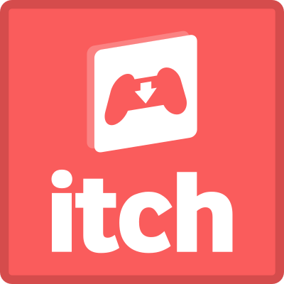

Venture

| Unity, C#
| Oct 2018 - Dec 2018
2D Puzzle Platformer. As a spell-slinging wizard, venture through dangerous landscapes and use the spells and environment at your disposal to solve demanding puzzles!
As the lead programmer on a team of three, I handled the main gameplay mechanics and assets, UI, and level design. This project spanned over the course of two
months, and I'm super excited that it's finally out! I learned so much about the process of game development, from pitching to designing to collaborating with other designers and artists.
Automated Job Search
 | Python, SQL
| Oct 2018 - Nov 2018
| Python, SQL
| Oct 2018 - Nov 2018
Built application to automate population of a job search database. Used BeautifulSoup and Selenium to scrape from job listings,
and SQLite and Airtable API to populate an online database for easy access.
Receipt Reader
| Python
| Sep 2018
Utilized Google Vision API to build application to read receipt images and return sub-totals for each person on the bill.
Mutants are Friends
| Unity, C#
| Sep 2018
A 2D tile-based puzzle game. Escape the mad scientist's dungeon by cloning mutant DNA and finding the keys to the exits.
Created with a partner in under 24 hours for BearJams, worked mainly on programming, design, and art. This was both my
and my partner's first time building a game from scratch in Unity as well as doing a game jam, and it was a really fun and
amazing learning experience! You can check out the game here:
Mutants are Friends

Randomized Maze Races
| Java
| Spring 2018
A 2-player race to the finish in randomly generated mazes. Navigate through death tiles and portals to victory
before your opponent. A relatively simple game that taught me a lot about large-scale programming design
choices and class interactions as well as how computers really achieve "random".

Research @ The Salk Institute
| Bash, Java
| Summer 2016
Automated the preprocessing, visualization, and quality-control of next-gen sequencing data at the Salk Institute, which had all been
previously done manually at the expense of human error and time inefficiency. This was an amazing opportunity to experience computer science
in a professional setting, and my work is still being used today!

PacFish
| Java, Swing, Piskel
| Spring 2016
Programmer and artist in an underwater-themed recreation of PacMan. Collect enough food and reach the coral before the octopi eat it all or eat you!
This was my first ever programming project, and it was a great way to dip into beginner game dev at the same time.